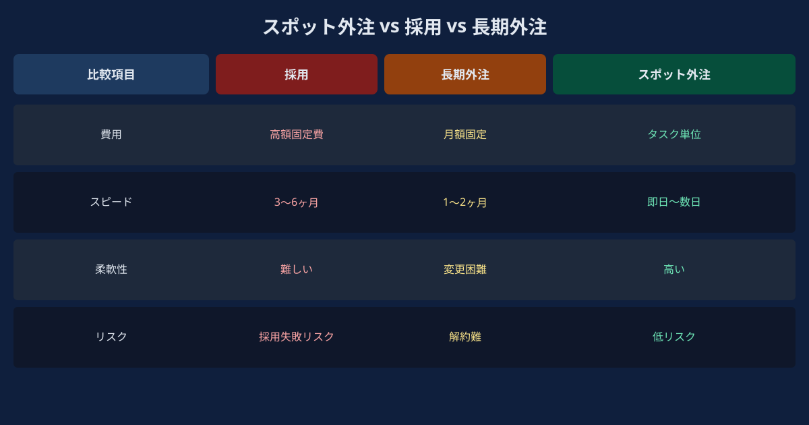
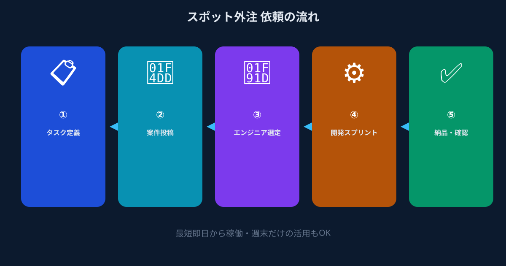

Chapter 1｜スポット外注とは何か？採用・長期外注との違い

「スポット外注」とは、特定のタスクやプロジェクトを短期間・単発で外部のエンジニアに委託する形態です。正社員採用や長期の業務委託契約と異なり、必要なタスクを必要な期間だけ、必要な人材に依頼できるのが最大の特徴です。
近年、副業解禁や働き方の多様化を背景に、「本業を続けながらスポットで副業を受ける」エンジニアが増加しています。これにより、発注側も以前は難しかった「週末だけ」「このタスクだけ」という柔軟な依頼が現実的に可能になりました。
| 比較項目 | 正社員採用 | 長期業務委託 | スポット外注 |
|---|---|---|---|
| コスト | 高（年収＋社保） | 中（月額固定） | 低（タスク単位） |
| 稼働開始まで | 1〜3ヶ月 | 2〜4週間 | 最短翌日〜 |
| 固定費リスク | 高 | 中 | なし |
| 品質の安定性 | 高 | 高〜中 | プラットフォーム次第 |
| スモールタスクへの適性 | 低 | 低 | 高 |
スポット外注が最も威力を発揮するのは、「採用するほどの業務量ではないが、誰かにやってもらわなければ進まない」という状況です。1〜5日で完結するタスク、季節性のあるプロジェクト、プロトタイプや技術検証（PoC）の段階などが典型的な活用シーンです。
Chapter 2｜スポット外注の費用相場（2026年版）
スポット外注の費用は、タスクの種類・エンジニアのスキルレベル・稼働期間によって大きく異なります。以下は2026年時点の一般的な相場感です（実際の金額はプラットフォームや個人によって異なります）。
| タスク種別 | 稼働目安 | 費用感（目安） | 備考 |
|---|---|---|---|
| Webサイトのバグ修正・軽微な改修 | 半日〜1日 | 1〜5万円 | フロントエンド中心 |
| LP（ランディングページ）実装 | 1〜3日 | 3〜15万円 | デザインカンプ支給が前提 |
| API連携・インテグレーション | 1〜5日 | 5〜25万円 | 複雑度によって変動大 |
| 社内ツール・自動化スクリプト | 1〜3日 | 3〜15万円 | Python/GASが多い |
| AIツール・LLM組み込み（PoC） | 2〜5日 | 10〜40万円 | AI専門スキルが必要 |
| ANKENでの平均的な依頼規模 | 1〜5日 | 大手外注の数十分の一 | 固定費・最低発注額なし |
大手受託開発会社と比較すると、スポット外注の費用感は「大手外注の数十分の一」になるケースが多いとされています。これは、大手では最低発注金額・プロジェクト管理費・ドキュメント作成費などの間接コストが上乗せされるためで、スポット外注ではタスクに直接かかる作業費だけを支払う設計になっているからです。
Chapter 3｜スポットエンジニアを探す5つの方法と比較
スポットエンジニアを探すルートは大きく5つあります。それぞれの特徴を把握し、自社の状況に合った方法を選ぶことが重要です。
Chapter 4｜依頼の流れ：準備〜稼働〜完了まで

スポット外注を初めて行う方が最も悩むのが「どのように進めるか」という手順です。一般的な流れを整理しておきましょう。
まずは無料相談で依頼内容を整理するところから始めましょう。
無料で相談してみる →Chapter 5｜スポット外注でよくある失敗と対策
スポット外注を初めて使う方が陥りやすい失敗パターンと、その対策をまとめます。
- 失敗①「何となくお願いしたら、思ったものと違うものが出てきた」 → 依頼内容の言語化が不十分だったケース。完了定義・参考URLの共有・技術スタックの明示で防げます。
- 失敗②「安さで選んだら、コミュニケーションが大変だった」 → 最安値よりも「スキルと状況の適切なマッチング」を優先することが重要です。
- 失敗③「納期に間に合わなかった」 → 双方が稼働スケジュールを明確にせずにスタートしたケース。稼働可能日・完了予定日を事前に合意することが鉄則です。
- 失敗④「追加作業が発生して費用が膨らんだ」 → スコープ（作業範囲）の定義が曖昧だったため。初期依頼時に「この作業は含むか/含まないか」を明確にしておきましょう。
Chapter 6｜こんなタスクに使われています（活用事例）
マーケチームが作ったデザインカンプを、社内エンジニアのスケジュールを待たずに週末スポットで実装。月曜には公開できた。
大手開発会社への見積もりは高額だった。ANKENでフルスタックエンジニアをアサインし、3日で連携を完成させた。
社内FAQをLLMで自動回答させるプロトタイプを最小コストで検証したかった。LLM専門エンジニアに依頼し、Slackに組み込むボットを5日で完成させて経営陣にデモできた。
毎週3時間かけていた手作業をPythonで自動化。担当者の業務負荷が劇的に減り、本来の業務に集中できるようになった。
Chapter 7｜FAQ：よくある疑問に答えます
まとめ・関連記事
スポット外注は、採用と長期外注の間にあった「ちょうど良い手段がない」という空白を埋める手段として、2026年現在、急速に普及しています。特に「週1日・タスク単位・固定費ゼロ」という条件で高品質なエンジニアにアクセスできるマイクロ・マッチングは、中小企業やスタートアップにとって現実的で強力な選択肢です。
まずはどんな依頼ができるか確認するだけでもOKです。開発リソース不足に悩む担当者に、一歩踏み出してみることをお勧めします。
固定費ゼロ・登録無料。どんな依頼ができるか確認するだけでもOKです。メガベンチャー出身の即戦力エンジニアへ、タスク単位でスポット依頼できます。
👉 無料で案件を相談してみる登録費用・固定費ゼロ。まず相談するだけでもOKです。
このガイドで気になったテーマを、詳しく読む
ジャンル別に代表記事をまとめています。気になるテーマから読み始めてください。